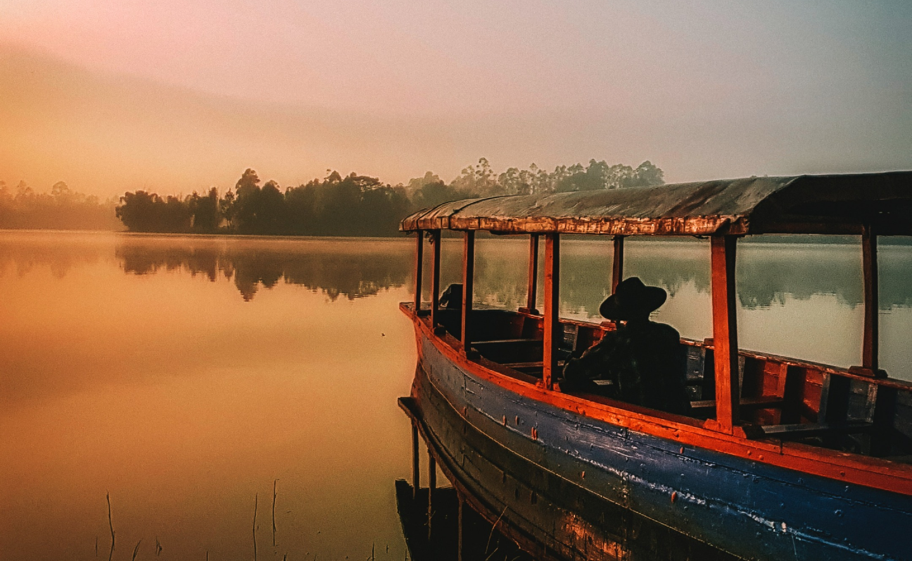
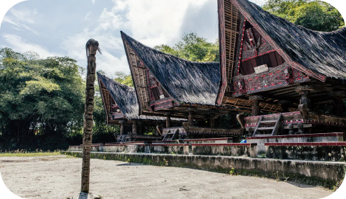
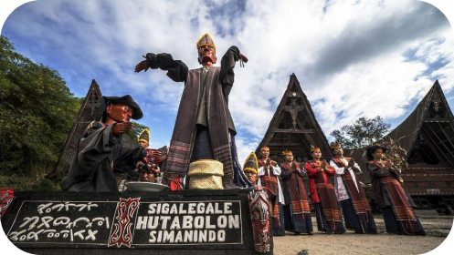
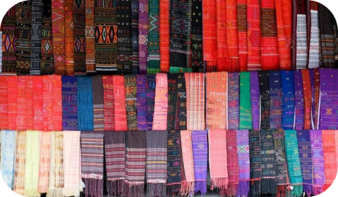

Danau Toba adalah keajaiban alam yang sungguh menakjubkan. Danau ini diyakini terbentuk dari letusan dahsyat gunung berapi, Gunung Toba, yang terjadi sekitar 74,000 tahun yang lalu. Dengan luas lebih dari 1,145 kilometer persegi dan kedalaman 450 meter, Danau Toba sebenarnya lebih mirip lautan daripada danau. Di tengah danau vulkanik terbesar di dunia ini, terdapat pulau yang cukup besar, yaitu Pulau Samosir.
Terbayangkah Anda, menjelajahi keindahan Danau Toba yang luas seperti samudera, dengan legenda sejarah yang tersembunyi di bawah air biru. Pulau Samosir, terletak di tengah danau,menjadi pusat daya tarik dengan kebudayaan dan pesona alam yang menakjubkan. Bergabunglah dalam petualangan melintasi danau vulkanik megah ini dan temukan keajaiban alam Indonesia yang memukau. Danau Toba dan Pulau Samosir menanti untuk merayakan keindahan alamnya bersama Anda!
Ada banyak cara untuk menikmati keindahan alam Danau Toba dan sekitarnya. Bagi penyuka olahraga air, menjelajahi Danau Toba menggunakan kayak adalah salah satu hal yang bisa dilakukan. Ada tiga rute yang bisa Anda ambil saat berkayak di sekitar Danau Toba. Jalur yang mudah adalah Tongging - Silalahi yang panjangnya sekitar 12 km. Untuk jalur menengah, rute yang menantang adalah Tongging – Samosir, menempuh jarak kurang lebih 50 km. Terakhir, ada jalur Northern Loop yang sangat menantang, yaitu jarak 175 km.
Di dekat Danau Toba, Anda juga akan menemukan dua museum yang kaya akan sejarah dan budaya Batak masyarakat yaitu Museum Tomok dan Museum Huta Bolon. Di Museum Tomok,Anda bisa melihat rumah tradisional Batak Toba yang berusia berabad-abad namun masih terawat dengan baik. Di Museum Huta Bolon, Anda akan dibuat takjub dengan ukiran dan ornamen gorga Batak yang merupakan bagian dari struktur museum.
Hal unik lainnya yang bisa Anda temukan di kawasan Danau Toba adalah boneka kayu seukuran aslinya yang disebut Sigale-gale. Sigale-gale terkenal dengan mistik dan mitosnya. Masyarakat setempat percaya akan hal itu Boneka sigale-gale bisa menari dan berduka sendiri, meski tanpa musik. Ada yang mengatakan itu boneka-boneka ini hanya boleh ditempatkan di dalam kotak. Boneka sigale-gale sering digunakan dalam keluarga upacara pemakaman di wilayah Samosir, demikian kepercayaan masyarakat setempat yaitu Sigale -Tarian gale akan memandu arwah orang yang meninggal menuju akhirat.
Nah bagi yang sedang mencari oleh-oleh, kain ulos wajib dibeli saat berkunjung ke Danau Toba. Tidak hanya berfungsi sebagai pakaian tetapi juga merupakan simbol status sosial dan umum dipakai saat perayaan penting seperti kelahiran dan pernikahan. Selain Ulos, ada ukiran kayu unik dan menarik yang bisa dijadikan kenang-kenangan. Untuk kopi Peminatnya jangan lupa membeli jenis kopi ternama Danau Toba seperti Lintong kopi dan kopi Sidikalang! Sampai jumpa di Danau Toba!
ayo dukung tempat wisata dengan menulis ulasan !
Danau Toba keren banget! Pemandangannya kaya lukisan alam, apalagi ada Pulau Samosir di tengah. Asik buat yang suka suasana tenang dan alam yang unik. Gak sabar mau balik lagi deh!
Danau Toba keren banget! Pemandangannya kaya lukisan alam, apalagi ada Pulau Samosir di tengah. Asik buat yang suka suasana tenang dan alam yang unik. Gak sabar mau balik lagi deh!